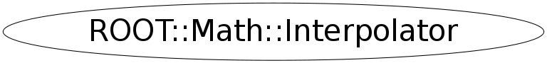

class ROOT::Math::Interpolator
Class for performing function interpolation of points.
The class is instantiated with an interpolation methods, passed as an enumeration in the constructor.
See Interpolation::Type for the available interpolation algorithms, which are implemented using GSL.
See also the <A HREF=http://www.gnu.org/software/gsl/manual/html_node/Interpolation.html">GSL manual</A> for more information.
The class provides additional methods for computing derivatives and integrals of interpolating functions.
This class does not support copying.
@ingroup Interpolation
Function Members (Methods)
public:
| virtual | ~Interpolator() |
| double | Deriv(double x) const |
| double | Deriv2(double x) const |
| double | Eval(double x) const |
| double | Integ(double a, double b) const |
| ROOT::Math::Interpolator | Interpolator(unsigned int ndata = 0, ROOT::Math::Interpolation::Type type = Interpolation::kCSPLINE) |
| ROOT::Math::Interpolator | Interpolator(const vector<double>& x, const vector<double>& y, ROOT::Math::Interpolation::Type type = Interpolation::kCSPLINE) |
| bool | SetData(const vector<double>& x, const vector<double>& y) |
| bool | SetData(unsigned int ndata, const double* x, const double* y) |
| string | Type() const |
| string | TypeGet() const |
private:
| ROOT::Math::Interpolator | Interpolator(const ROOT::Math::Interpolator&) |
| ROOT::Math::Interpolator& | operator=(const ROOT::Math::Interpolator&) |
Class Charts
{kind=link}
{kind=link}
{kind=link}
{kind=link}

Function documentation
Interpolator(unsigned int ndata = 0, ROOT::Math::Interpolation::Type type = Interpolation::kCSPLINE)
Interpolator(const vector<double>& x, const vector<double>& y, ROOT::Math::Interpolation::Type type = Interpolation::kCSPLINE)
Constructs an interpolator class from vector of data points \f$ (x_i, y_i )\f$ and with Interpolation::Type type.
The method will compute a continous interpolating function \f$ y(x) \f$ such that \f$ y_i = y ( x_i )\f$.
The defult interpolation type is Cubic spline
virtual ~Interpolator()
Interpolator(const ROOT::Math::Interpolator& )
usually copying is non trivial, so we make this unaccessible
bool SetData(const vector<double>& x, const vector<double>& y)
Set the data vector ( x[] and y[] )
To be efficient, the size of the data must be the same of the value used in the constructor (ndata)
If this is not the case a new re-initialization is performed with the new data size
bool SetData(unsigned int ndata, const double* x, const double* y)
Set the data vector ( x[] and y[] )
To be efficient, the size of the data must be the same of the value used when constructing the class (ndata)
If this is not the case a new re-initialization is performed with the new data size.
double Integ(double a, double b) const
Return the Integral of the interpolated function over the range [a,b]
std::string TypeGet() const